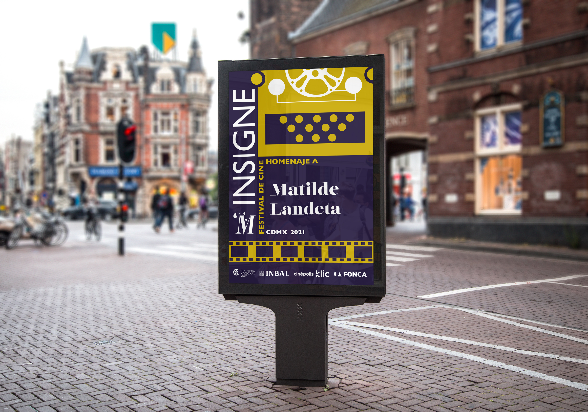
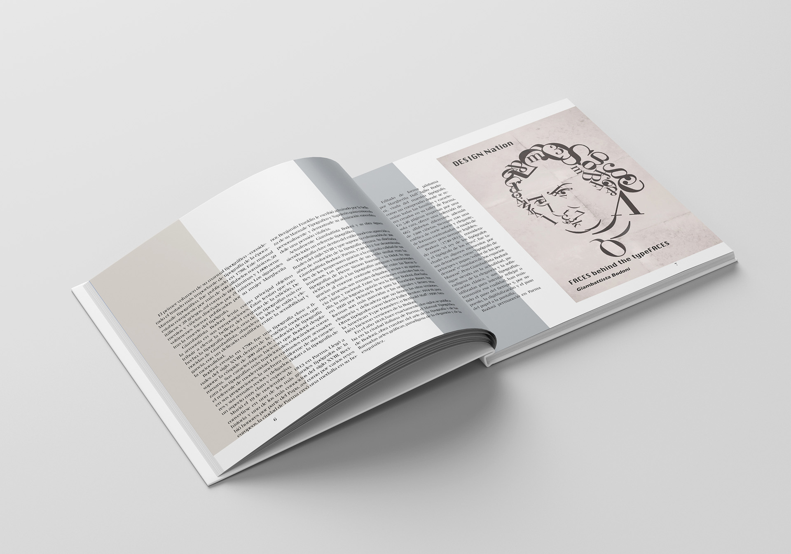

¿Cómo me veo en un futuro?
Ya en dos años acabo la carrera y hasta ahorita lo que más me ha gustado es editorial y teorías , entonces hasta ahorita creo que en eso me puedo especializar. Me gustaría vivir y trabajar en diferentes partes del mundo, algo que he aprendido es que debes tener conocimientos de varias parte del mundo para hacerte tu propio estilo y/o ideología. Como diría ya de mis películas favoritas, la vida es corta y hay que crearla de memorias.
Áreas de mejora :
Un talón de aquiles para mi en la carrera es marca e ilustración, la veo como área de oportunidad porque no soy la mejor pero con tiempo y dedicación logro sacar las cosas. Con esfuerzo lograré mejorar en estas dos cosas.
Bucket List:
Backpacking por Europa
Trabajar en Vogue NY
Ir a la F1 en Monáco
Hacer un máster en Europa
Vivir sola
Hacer un voluntariado en África
Ver las auroras boreales
Aventarse de paracaídas
Aprender Historia del Arte
Un poco de mi portafolio

